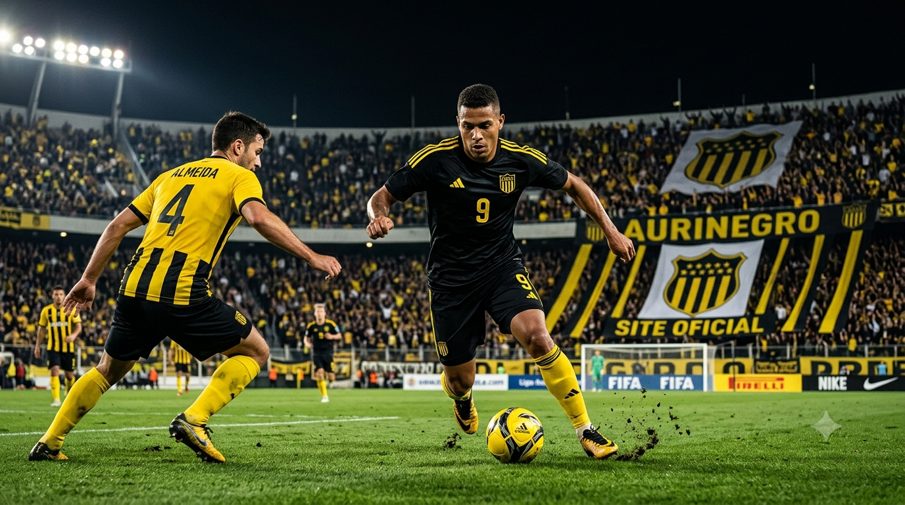

olá, aqui vamos ver os melhores craques da década
Por: Adryan kanaski
Boas-vindas aqui teremos desde um atacante até goleiros
vou apresentar os melhores da década

Por: Adryan kanaski
Boas-vindas aqui teremos desde um atacante até goleiros